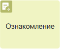Графический элемент Ознакомление размещается на том этапе процесса, где его участники должны ознакомиться с содержимым файла, документа или элемента приложения. Сотрудникам приходит задача, содержащая ссылку на объект, а на его карточке создаётся лист ознакомления. В нём можно просмотреть резолюции сотрудников, их комментарии и дополнительно приложенные файлы.
О том, как использовать графический элемент в бизнес‑процессе, мы подробно написали в статье «Пример настройки маршрута ознакомления».
Чтобы перейти в окно настроек графического элемента, дважды нажмите на него на схеме процесса. Задайте параметры на вкладках Основное, Форма, Время выполнения, Планирование в календаре, Переходы, Пользовательские статусы, Подпись и Замещения.
начало внимание
Перед настройкой убедитесь, что в контекст процесса добавлена переменная, ссылающаяся на объект ознакомления.
конец внимание
Вкладка «Основное»
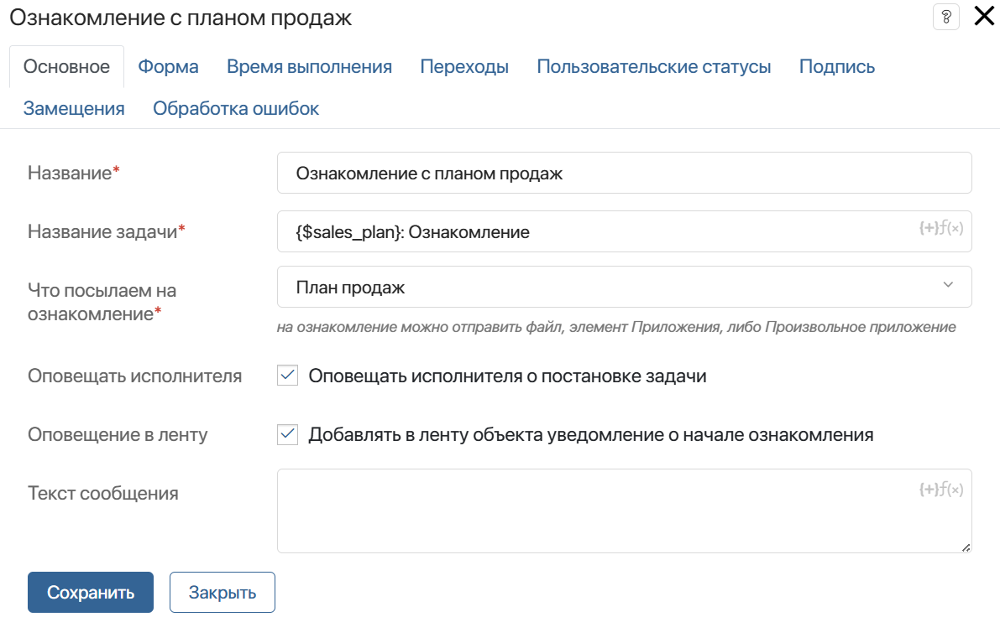
- Название* — введите текст, который будет отображаться на схеме процесса;
- Название задачи* — придумайте краткую и информативную тему, отражающую суть задачи. Тема используется в качестве заголовка задачи в #ленте. Чтобы включить контекстные переменные в название, нажмите значок {+} в правом углу поля. Также можно добавить условия и функции для формирования названия элемента по шаблону. Это позволит сгенерировать более информативное название задачи;
- Что посылаем на ознакомление — эта опция позволяет выбрать переменную, хранящую ссылку на объект ознакомления, например, файл, документ, элемент приложения;
- Оповещать исполнителя — включите опцию, чтобы исполнитель получил в #ленту уведомление о назначении задачи ознакомления;
- Оповещение в ленту — включите опцию, чтобы в ленту объекта отправлялось сообщение о начале ознакомления;
- Текст сообщения — в этом поле вы можете указать подробную информацию, которую необходимо получить сотруднику. Кроме того, при помощи контекстных переменных сюда можно поместить, например, комментарий участника процесса. Для этого нажмите значок {+} в правом углу поля. Также можно добавить условие или функцию тем же способом, как в поле Название задачи*.
Вкладка «Форма»
Эта вкладка появится, если на ознакомление отправлен элемент приложения. Она позволяет с нуля настроить собственную форму задачи ознакомления. Если вы хотите использовать форму по умолчанию, менять настройки на этой вкладке не нужно.
Чтобы создать форму, нажмите <По умолчанию> и затем кнопку + Создать форму. Откроется шаблон формы в дизайнере интерфейсов.
Разместите на форме нужные виджеты и кнопки. Вы можете применить скрипты, задать валидацию формы и т. д. Сохраните выполненные настройки.
Чтобы настроить отображение свойств элемента приложения, отправляемого на ознакомление, заново перейдите в настройки блока Ознакомление на вкладку Форма.
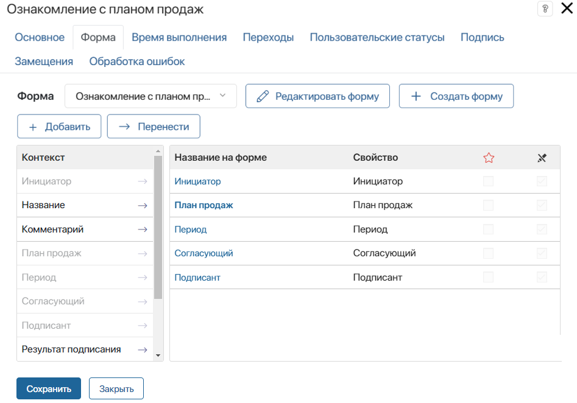
Вынесите нужные поля на форму или создайте новые. Задайте настройки их видимости и обязательность заполнения. Эти действия аналогичны настройкам формы в блоке Задача. Обратите внимание, указанные настройки доступны только для пользовательской формы.
Вкладка «Время выполнения»
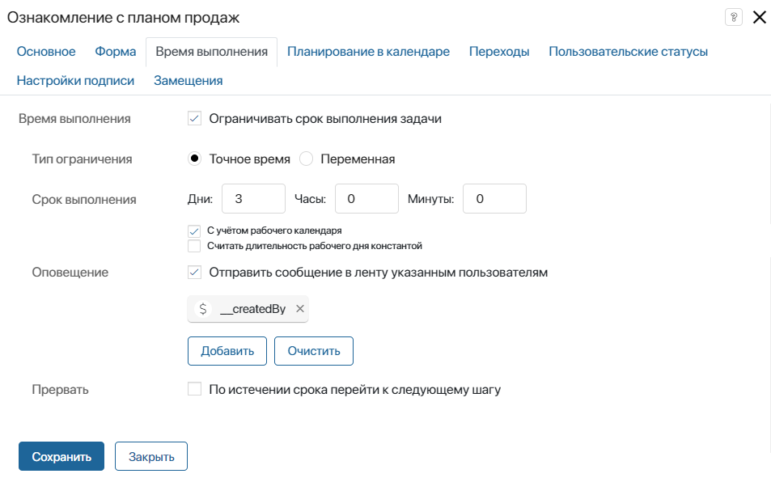
На этой вкладке вы можете настроить сроки выполнения задачи, а также определить, что произойдёт, если в указанное время задача не будет завершена.
Задать срок выполнения задачи можно двумя способами:
- Точное время — укажите, за сколько минут, часов или дней исполнитель должен выполнить работу;
- Переменная — иногда бывает важно закончить ознакомление до какого-то определённого срока. Например, сотрудник может указать точную дату, когда его коллеги должны ознакомиться с новым внутренним регламентом работы. К этому дню все указанные пользователи уже должны ознакомиться с документом. В этом случае время завершения задачи можно определить контекстной переменной типа Дата/время.
Если задача ознакомления находится в зоне ответственности с несколькими исполнителями, и вы определите срок через контекстную переменную, то все исполнители должны будут завершить ознакомление к указанному времени, иначе задача будет считаться просроченной.
При уточнении срока выполнения задачи вы можете активировать следующие опции:
- С учётом рабочего календаря — время выполнения рассчитывается согласно рабочему календарю и не включает нерабочие часы сотрудника.
Если кто-то из пользователей отредактировал рабочий календарь, опубликуйте процесс повторно, чтобы применить новый график работы для срока выполнения задачи;
- Считать длительность рабочего дня константой — опция доступна при учёте рабочего календаря. Она позволяет высчитывать срок завершения задачи исходя из количества рабочих часов в день. Для расчёта используется время, указанное в настройках рабочего календаря в поле Стандартный режим работы.
Примеры вычисления срока выполнения даны в статье «Задача».
В поле Оповещение вы можете указать сотрудников, которые получат уведомление, если исполнитель не уложится в срок. В качестве получателя можно добавить текущего пользователя, контекстную переменную (например, инициатора), группу пользователей или элемент оргструктуры.
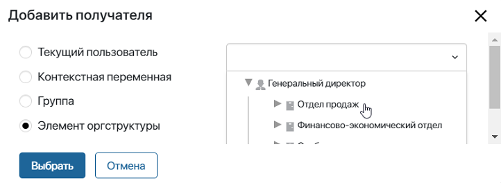
По умолчанию сообщение будет отправлено всем сотрудникам, которые указаны в настройках зоны ответственности, содержащей ознакомление. Чтобы выбрать других получателей, нажмите на кнопку Добавить.
- Текущий пользователь — исполнитель зоны ответственности с элементом ознакомление;
- Контекстная переменная — вы можете определить получателя при помощи переменной типа Пользователи из контекста процесса;
- Группа — сообщение будет отправлено группе пользователей;
- Элемент оргструктуры — указать получателя можно при помощи элемента оргструктуры.
В поле Прервать определите, каким будет следующий шаг в процессе, если исполнитель не успеет завершить ознакомление до установленного времени.
Указанный переход автоматически выбирается, если установленное время истекает, а исполнитель не подтверждает, что задача выполнена. На схеме процесса такой переход отмечается иконкой с часами.
Вкладка «Планирование в календаре»
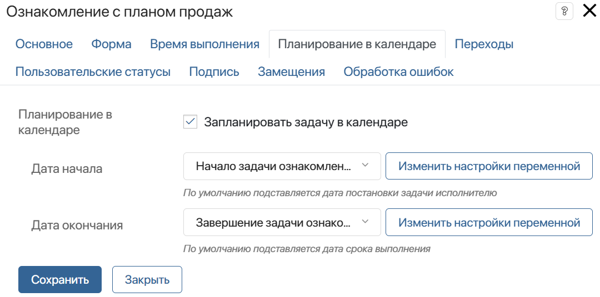
Эта вкладка появится, если срок выполнения задачи ограничен. Здесь вы можете включить отображение задачи в календаре исполнителя.
Чтобы не перегружать календарь, можно запланировать задачу в нём только на определённые дни. Например, срок ознакомления составляет три дня. Тогда отобразить задачу в календаре можно только на последний день. Для этого:
- Добавьте в контекст переменные типа Дата/время, в которые запишутся значения для сроков задачи в календаре.
- На схеме процесса до графического элемента Ознакомление разместите скрипт, вычисляющий значения этих переменных.
- На текущей вкладке свяжите поля Дата начала и Дата окончания с этими переменными.
Вкладка «Переходы»
На этой вкладке выполняется настройка исходящих переходов.
Основной переход, по которому процесс продолжится при успешном подтверждении ознакомления, необходимо отметить как переход по умолчанию.
Кроме того, вы можете добавить на схему процесса дополнительные переходы. Например, чтобы процесс продолжился по другой ветке, если отправленный на ознакомление файл удалён, для документа добавлена новая версия, или у пользователя нет прав на его просмотр. В настройках такого перехода задаются условия, при выполнении которых процесс пойдёт по нему вместо перехода по умолчанию. В этом случае на страницу файла или в карточку элемента запишется статус ознакомления Отменено.
Если вы добавили переход для обработки ошибок, он отобразится на этой вкладке вместе с остальными. Не задавайте для него условия, так как при выполнении процесса они будут игнорироваться.
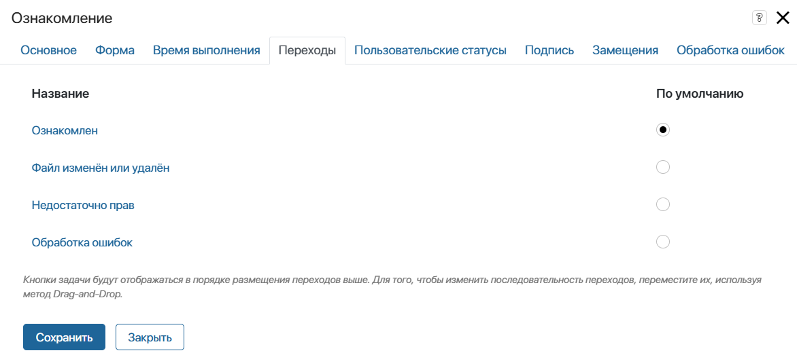
Обратите внимание, если на вкладке Время выполнения настроен переход эскалации, процесс сможет перейти по остальным переходам только до окончания срока задачи.
начало внимание
Так как процесс направляется по дополнительным переходам автоматически, для них не предусматриваются кнопки в задаче ознакомления. По умолчанию пользователь увидит только кнопку Ознакомиться. Вы можете добавить кнопки для вынесения пользовательской резолюции при ознакомлении, однако они не влияют на выбор переходов при исполнении процесса.
конец внимание
Чтобы открыть окно с настройками перехода, нажмите на его название.
На вкладке Основное задайте название перехода, которое отобразится на схеме процесса. Также можно ввести описание.
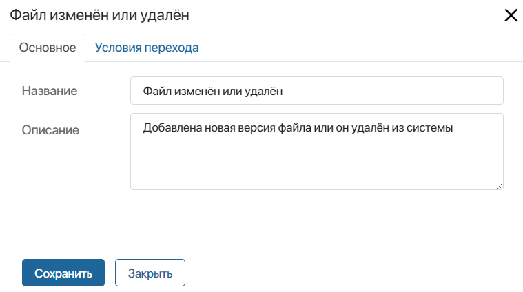
Затем перейдите на вкладку Условия перехода, нажмите + Добавить условие и задайте настройки:
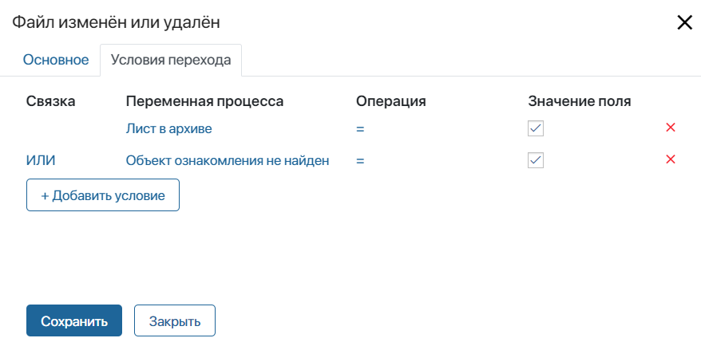
- Переменная процесса — укажите переменную из контекста процесса или одну из опций:
- Лист в архиве — проверка, отправлен ли лист ознакомления в архив. Обратите внимание, для элементов правила архивации листов задаются в настройках приложения. Для файлов листы всегда отправляются в архив при добавлении новой версии;
- Объект ознакомления не найден — проверка, что объект не удалён из системы. Обратите внимание, опция работает только при отправке на ознакомление файла. Если отправляется элемент приложения, при его удалении выполнение процесса в любом случае прервётся с ошибкой;
- Нет доступа к объекту ознакомления.
- Операция — задайте оператор сравнения для проверки конкретного условия;
- Значение поля — введите значение, при котором условие будет выполняться;
- Связка — выберите, какие логические операции использовать для проверки нескольких условий. Если результат проверки Истина, то процесс продолжится по данному переходу:
- И — результат Истина, если выполняются оба условия;
- ИЛИ — результат Истина, если выполняется хотя бы одно условие;
- И НЕ — результат Истина, если выполняется первое условие, и в то же время не выполняется второе условие;
- ИЛИ НЕ — результат Истина, если выполняется первое условие либо если не выполняется второе.
Обратите внимание, условия проверяются в том порядке, в котором они перечислены в настройках перехода.
Для задач ознакомления, размещённых в зоне ответственности с несколькими исполнителями, условия перехода проверяются каждый раз, когда кто‑то из пользователей завершает задачу.
Подробнее о применении переходов в процессе читайте в статье «Переходы».
Вкладка «Пользовательские статусы»
При создании пользовательского статуса в задаче ознакомления появится дополнительная кнопка. С её помощью сотрудники смогут вынести пользовательскую резолюцию в рамках стандартной процедуры ознакомления.
В зависимости от того, на какой объект (элемент приложения или файл) ссылается переменная, указанная на вкладке Основное в поле Что посылаем на ознакомление, кнопка появится в карточке элемента или на странице просмотра файла.
начало внимание
Кнопки в задаче ознакомления используются только для вынесения резолюции и не определяют дальнейший ход бизнес‑процесса. Независимо от выбранной кнопки, при успешном ознакомлении процесс продолжится по переходу, выбранному в настройках в качестве перехода по умолчанию.
конец внимание
Например, вы можете добавить статус Необходимы уточнения. Сотрудник может завершить задачу ознакомления с документом, при прочтении которого появились вопросы. Движение документа по процессу продолжится согласно логике, заданной следующими блоками на схеме. При этом в листе ознакомления, напротив фамилии пользователя, выбравшего данную резолюцию, появится статус: Необходимы уточнения.
Финальным статусом элемента вне зависимости от выбранных резолюций будет статус Ознакомились.
Чтобы настроить статус, включите опцию Использовать пользовательский статус и заполните появившиеся поля:
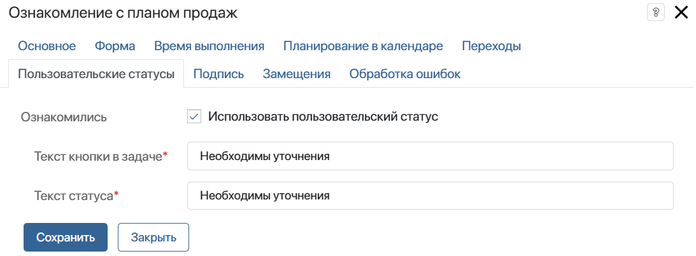
- Текст кнопки в задаче* — введите название для кнопки, нажав на которую пользователь завершит задачу ознакомления. Дополнительная кнопка будет отображаться рядом с системной кнопкой Ознакомиться:
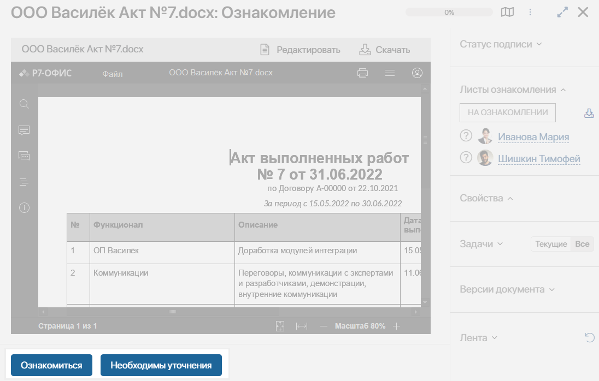
- Текст статуса* — введите название статуса, который будет отображаться в листе ознакомления после закрытия задачи:
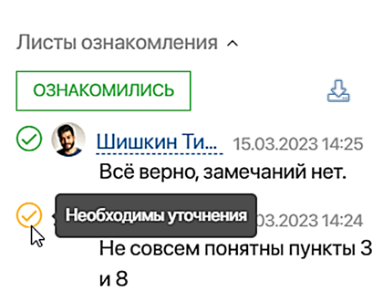
Пользовательский статус будет выводиться в листе ознакомления, а также отображаться вместе с системным статусом Ознакомлен при выгрузке листа.
Вкладка «Подпись»
Вы можете настроить использование электронной подписи на шаге ознакомления. Тогда в поступившей задаче пользователь нажимает кнопку Ознакомиться, а затем включает опцию подписания. В открывшемся окне сотрудник выбирает объекты для подписания: атрибуты и файл. Таким образом он подтверждает, что рассмотрел документ. Данные об этом сохраняются в карточке подписанного элемента приложения. Подробнее о том, как выполнить такую задачу и где посмотреть детали применённой электронной подписи, читайте в статье «Электронная подпись в приложениях».
Чтобы включить подписание объекта ознакомления, на вкладке Подпись задайте параметры так же, как для графического элемента Согласование. В настройках отсутствует лишь опция Подпись решения, поскольку в случае ознакомления резолюция по документу не выносится. Подробнее об этом читайте в статье «Согласование».
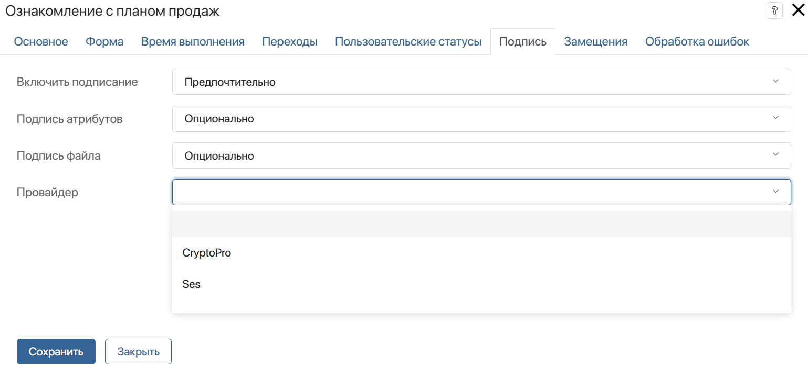
Вкладка «Замещения»
На этой вкладке вы можете указать переменную, которая управляет переназначением задачи ознакомления на сотрудника, замещающего основного исполнителя.
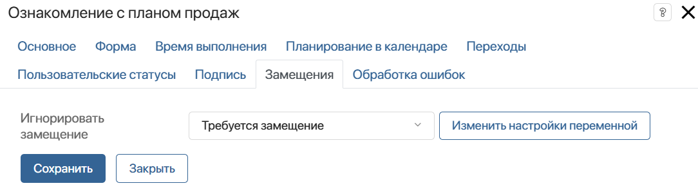
В поле Игнорировать замещение укажите переменную из контекста бизнес-процесса типа Выбор «да/нет».
Если в переменной установлено значение Да, задача ознакомления придёт изначально указанному исполнителю, а при значении Нет — замещающему его сотруднику. Значение переменной можно изменять в ходе бизнес‑процесса, например, вынести переменную на форму другой задачи, либо с помощью скриптов.
Например, игнорировать замещение можно, если документ, отправленный на ознакомление, содержит конфиденциальные данные, которые не должны быть переданы третьим лицам.
Вкладка «Обработка ошибок»
В ходе процесса на этапе ознакомления может возникнуть ошибка. Например, если переменная, хранящая файл или элемент приложения для ознакомления, оказывается не заполнена. Вы можете определить, по какой ветке в этом случае направится бизнес‑процесс, и настроить оповещение:
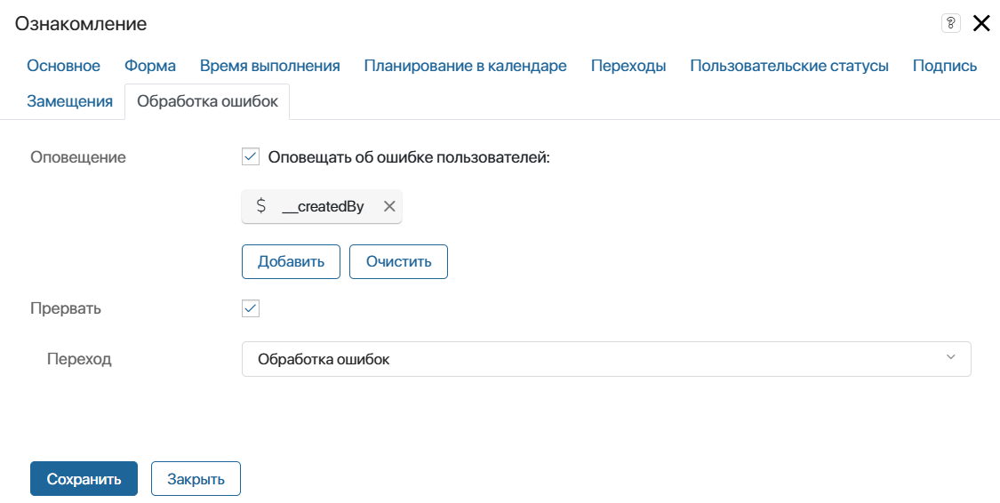
- Оповещение — включите опцию и укажите пользователей, которым будет отправляться оповещение об ошибке в процессе. Вы можете выбрать пользователя, группу пользователей, элемент оргструктуры, а также указать контекстную переменную, например, инициатора процесса;
- Прервать — включите опцию, а затем в поле Переход укажите, по какой ветке направится процесс в случае ошибки. Указанный в этих настройках переход будет отмечен на схеме процесса значком
 .
.
Обратите внимание, если вы выберете переход, для которого настроены условия, они будут игнорироваться. Процесс продолжится по указанному переходу только в случае ошибки.
После завершения настройки нажмите кнопку Сохранить.
Лист ознакомления
Как только процесс доходит до блока Ознакомления, в #ленте исполнителей отображается оповещение о поставленной задаче с ссылкой на файл, документ или элемент приложения.
В карточке объекта создаётся лист ознакомления со списком сотрудников, которым назначены задачи. Рядом с пользователем, который ещё не просмотрел документ, отображается вопросительный знак. После выполнения задачи в лист добавляется дата, время, оставленный при ознакомлении комментарий и прикреплённый файл.
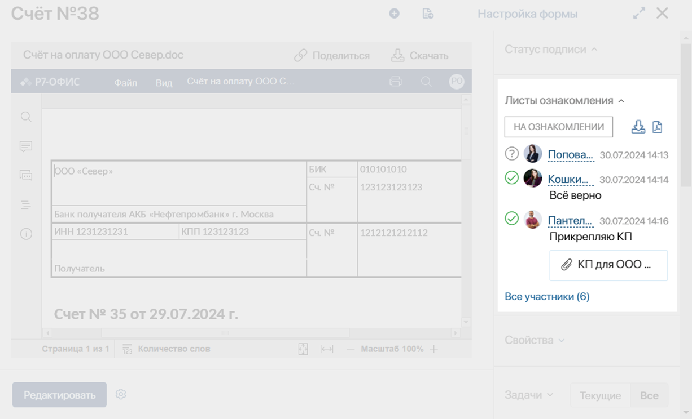
Если документ отправлен множеству исполнителей, можно просмотреть весь список, нажав в листе ознакомления Все участники. Применив фильтр, можно узнать, кто из сотрудников ещё не выполнил задачу.
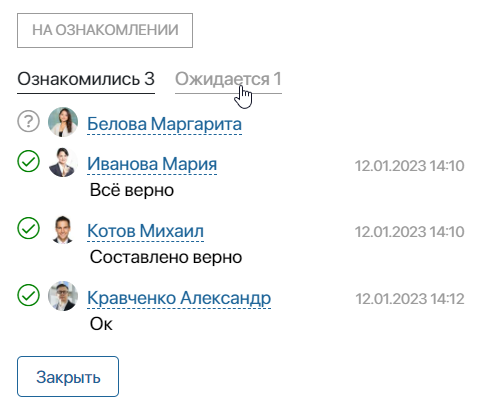
Вы можете экспортировать лист ознакомления со всеми резолюциями, нажав значок выгрузки на боковой панели докмента:
 — для экспорта файла формата .xlsx;
— для экспорта файла формата .xlsx; — для экспорта файла формата .pdf. Значок отобразится, если используется пользовательский шаблон для формирования листа.
— для экспорта файла формата .pdf. Значок отобразится, если используется пользовательский шаблон для формирования листа.
Подробнее читайте в статье «Листы ознакомления и согласования документов».